“商家切板页面”都是由和商家对接的顾问发给你的，里面会包含3个文件：pc图片，wap图片，说明文档（包含一些细节的东西，下面会讲到），下面的讲解也会先从pc切板开始，然后讲解wap切板和说明文档里面的东西；同时这里会结合“商家专题模版”文件一起进行讲解，在切图的同时修改模版html页面里面的代码。
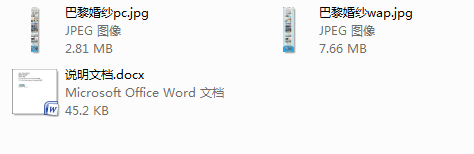
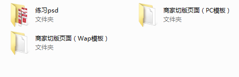
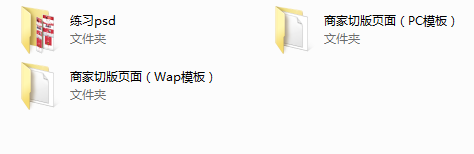
“商家专题页面”也叫“商家切板页面”，是由商家自己设计，然后投放到我们平台的页面，我们前端仅仅对商家专题做全图切板，页面不做任何的特殊效果,都是由一个个img标签去显示的页面，制作熟练的话，一个切板大概也就5分钟左右，下面会逐步讲解如何制作商家切板页面。
“商家切板页面”都是由和商家对接的顾问发给你的，里面会包含3个文件：pc图片，wap图片，说明文档（包含一些细节的东西，下面会讲到），下面的讲解也会先从pc切板开始，然后讲解wap切板和说明文档里面的东西；同时这里会结合“商家专题模版”文件一起进行讲解，在切图的同时修改模版html页面里面的代码。
【第一步】：打开ps软件，把pc图片放入ps里面 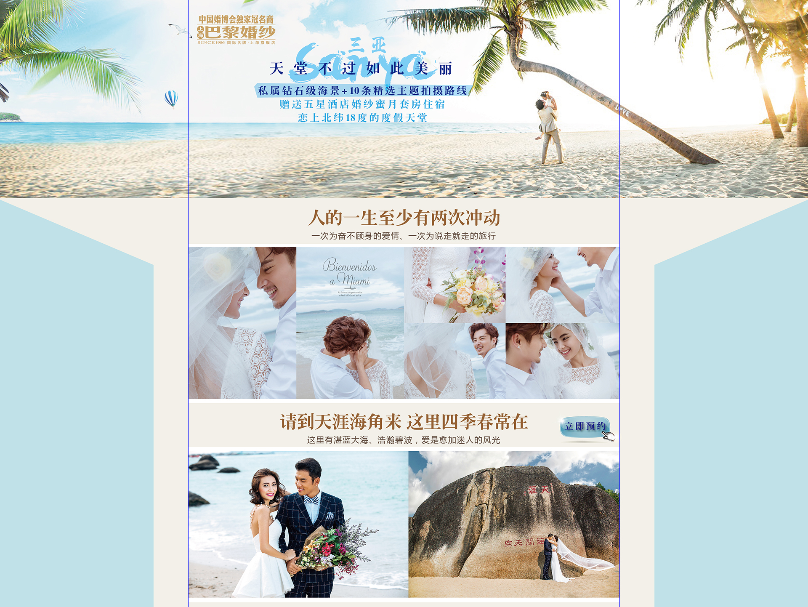
【第二步】：在ps里面找到“切片工具”，选择“切片选择工具”；选择“水平划分”，设置“100-300”之间的数值（至于到底设置多少，要根据你的设计稿上面的点击按钮来定，要保证大部分按钮都不被“横切线”盖住即可），同时要更改代码里面的img高度值=你设置的“像素/切片”值。
【第三步】：检查切片区域，查看图片上的点击按钮区域是否有被“横切线”覆盖的地方，如果有部分按钮被覆盖了则可以进行如下处理。 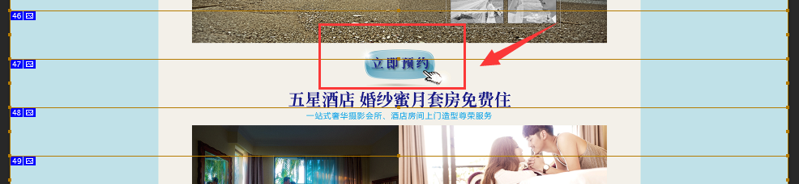 （使用“切片选择工具”，用鼠标左键红框那个序列号去选中这个切片，然后鼠标右键选择“删除切片”）。 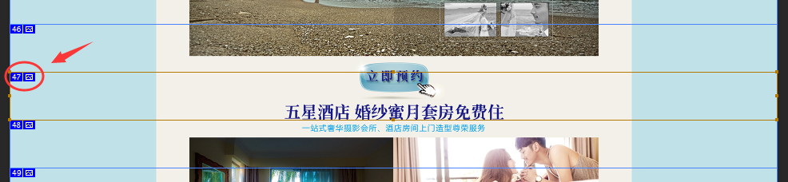 （“删除切片”后原来的横切线至灰，这时使用“切片选择工具”，用鼠标左键选中删除序列号的上一个序列号，之后鼠标左键红框区域的小点，进行拖动，直至原来被删除的切片底部位置，这时你会发现，灰色切片被它的上一个切片包含住了，并且ps序列号也得到了修正）。 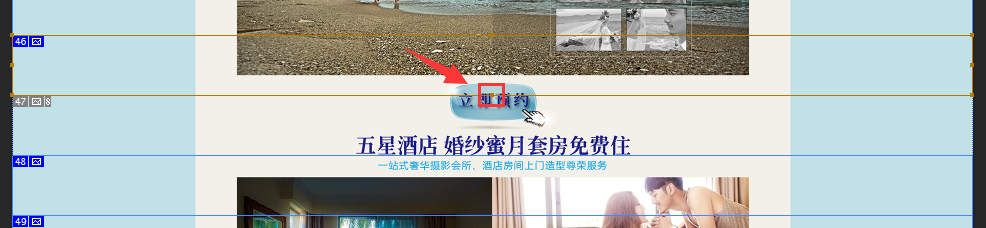 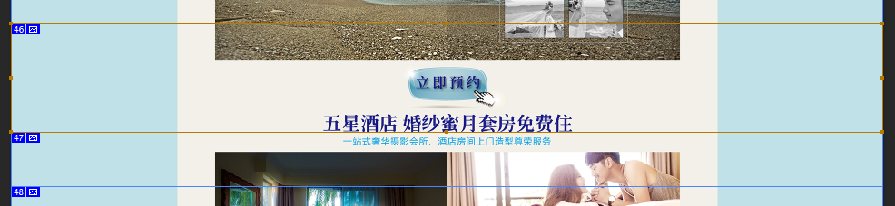 （接下来还要去修改代码部分，找到ps序列号的那张图片，把高度修改为原来的两倍即可；而且这里建议每更改一个切板序列，都要同步进行代码的更改，不要以为自己记忆力好，就全部处理完后在一起更改，这样会容易出错）。 （这里还有一点要注意，一般最后一张切板图片的“横切线”高度值都不是你设置的那个高度值，你需要测量好最后那个切板图片的高度值，然后更改代码最后一张图片的高度值）。 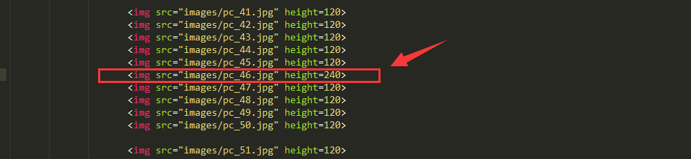 （如果有时候你觉得上面操作很麻烦，也可以不用去调整那个分割线，可以用a标签把这个因分割划切割的按钮图片都包住）。
【第四步】：保存jpg图片（shift+ctrl+alt+s），文件名命名为“pc.jpg”即可（注意保存图片时，pc端的名字统一命名为pc.jpg，而wap端的统一命名为wap.jpg）；保存完毕后，ps会自动帮你生成一个“images”文件夹在你的保存目录里面。 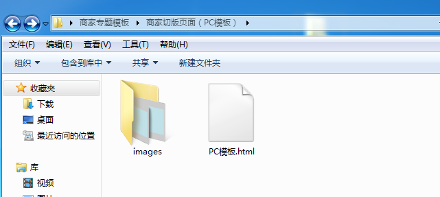
wap端的商家切板最简单，和pc商家切板是一样的，还记得pc切板的“第三步”？里面有提到，如果点击按钮被“横切线”覆盖的话，要做处理，但在wap端，如果你觉得麻烦的话，可以直接把那个被“横切线”覆盖的按钮的相邻两张图片都用a标签包起来。 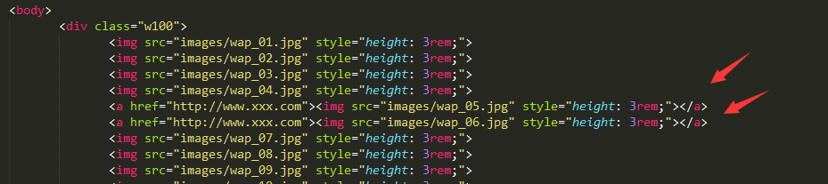
之前说过，“商家专题页面”都是由顾问发给前端部门制作的，顾问写的文档里面会告诉你这个商家的名称、商家的分类、所属的行业、页面按钮是预约到个平台、店铺ID等一些信息。我们在本地做完页面后都会把页面投放到我们的后台框架中，那么在“添加”项目的时候，这些信息都会用到，如果顾问发来的“商家切板页面”里面没有这个文档的话，建议你跟他们要，不然容易在制作的过程中，反复的去跟他们沟通，既耽误你的时间，也耽误他们的时间。 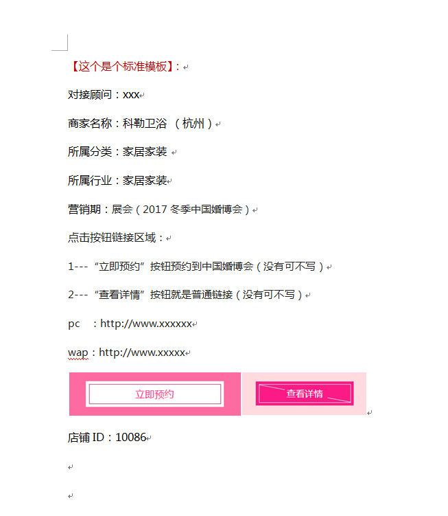
为了快速制作商家专题页面（商家切板页面），我们在这里写好了模版页面，你只需要替换或修改模版html里面的部分代码即可完成一个“商家切板页面”；同时文件里面还提供了练习文件，你可以在看完这个文档后去自己试试。如果能在15分钟内把这个练习做完（限本地测试），那也就基本可以了。 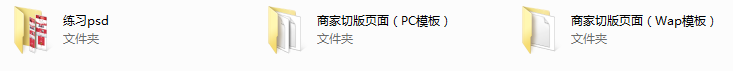